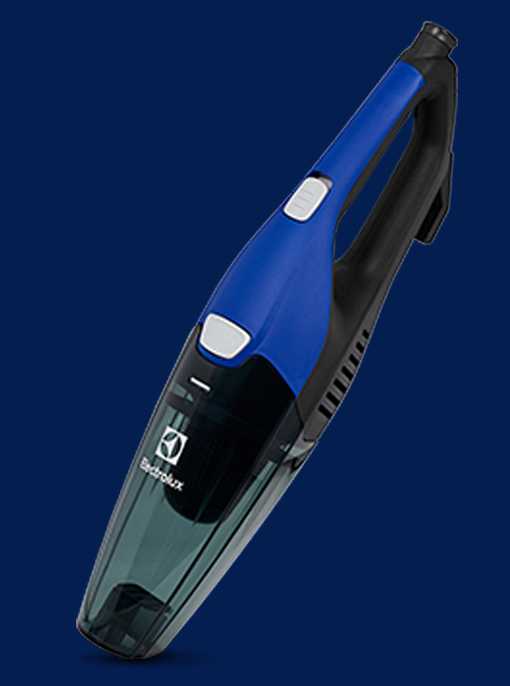
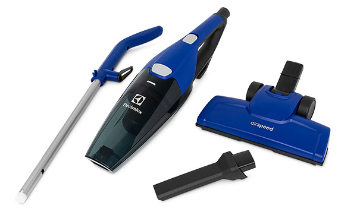

Sempre à mão para
uma limpeza eficiente.

Aspirador Vertical 3 em 1, ergonômico,
potente e com 5 metros de cabo elétrico.
Fácil de usar e montar.
Aspirador Vertical 3 em 1, ergonômico,
potente e com 5 metros de cabo elétrico.
Fácil de usar e montar.
Com a alça removível fica mais fácil
aspirar qualquer tipo de piso e
limpar pequenas superfícies ou
bancos de carro.
600W de potência. Super potente
e extremamente eficiente.
Com 2 filtros, o Airspeede
devolve um ar mais puroe
para seu ambiente.
Com um alcance total de 5,5
metros, você aspira mais áreas com
menos trocas de tomada.
Ideal para alcançar
lugares de difícil acesso,
como janelas e espaços
entre móveis.
Encaixe prático e preciso para facilitar a limpeza.

Altura: 1046mm
Largura: 258mm
Profundidade: 163mm
Peso:
1,7kg